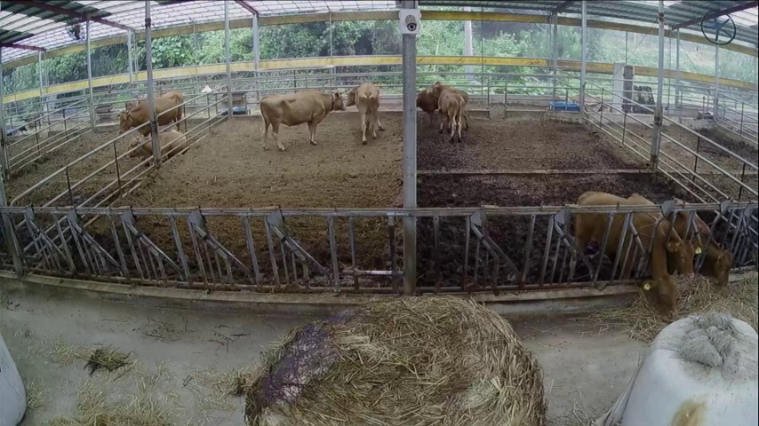
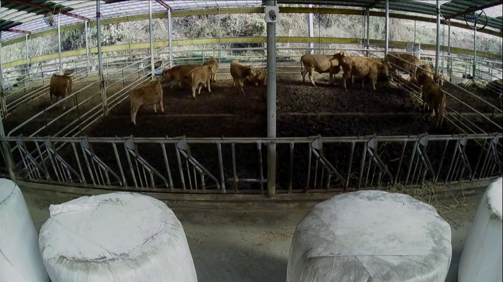

Lesson 02 / 14
Understanding the Data (Barn Videos)
Before building algorithms, we look at the data first. Understanding the videos' resolution, frame rate and length, and what makes detection and tracking hard, is the starting point for every design decision.
1. Check video info (ffprobe)
for f in E:/Video/cow/*.mp4; do echo $f; ffprobe -v error -select_streams v:0 \
-show_entries stream=width,height,r_frame_rate,nb_frames,duration -of csv=p=0 "$f"; done| Video | Resolution | FPS | Length | Frames |
|---|---|---|---|---|
| cow01, cow02 | 854×480 | 24 | 119 s | 2,856 |
| cow03 | 854×480 | 24 | 1,316 s (about 22 min) | 31,593 |
| cow04 ~ cow10 | 854×480 | 24 | 59.5 s | 1,428 |
2. Extract frames and look at them
ffmpeg -ss 10 -i E:/Video/cow/cow01.mp4 -frames:v 1 c01.jpg

3. Observations → design decisions
| Observation | Problem | Design decision (lesson) |
|---|---|---|
| The camera is fixed | — | Turn off camera motion compensation (GMC); a background-based perspective model becomes possible (06, 08) |
| About 10–13 animals per pen, often overlapping | ID switches | ReID features + offline stitching (06, 07) |
| Central pillar, front fence (stanchion) | Occlusion → broken tracks, sudden bbox size changes | Larger track_buffer, tracklet stitching and interpolation, speed cap (06–08) |
| Cattle at the top of the frame (back) are small; those at the bottom (front) are large | The same 1 m move covers different pixel distances | Perspective correction based on body height (08) |
| White silage bales, brown dirt floor | The COCO model detects bales as ‘sheep’; cattle and floor have similar colors | Barn-specific fine-tuning (03–05) |
| Videos with different seasons and lighting | Generalization | Train/val split by video, brightness augmentation (04, 05) |
| Cattle mostly move slowly or stand still | bbox jitter mistaken for ‘movement’ | 1-second smoothing, stationary threshold, motion energy to separate local activity (08) |
If you build this table during the “look at the data first” step, every later parameter has a documented reason for why it has that value.